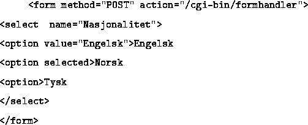
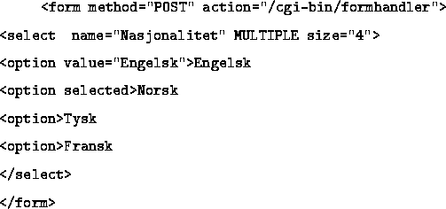

<option> må være med en eller flere ganger. value attributtet bør brukes. Dette sendes nemlig til skriptet, og er mekanismen skriptet kan bruke for å finne ut hva som er valgt. Hvis ikke benyttes bare name, og det er jo likt for alle opsjonene! Brukes selected, er denne opsjonen valgt når menyen kommer opp.

Forskjellen på denne og forrige type, er at man her kan velge mer enn ett valg i listen, og at man også kan spesifisere hvor mange opsjoner (linjer i lsiten) som skal være synlige samtidige. De resterende må skrolles fram.